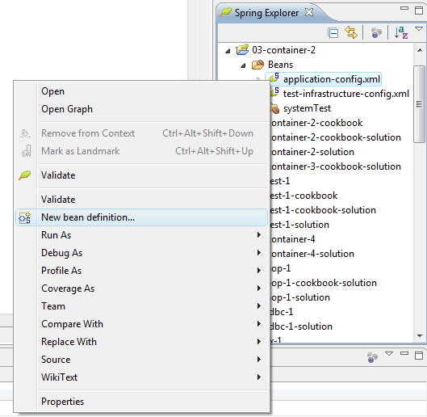
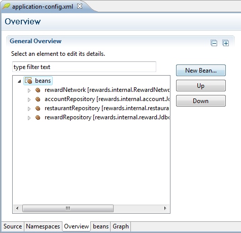
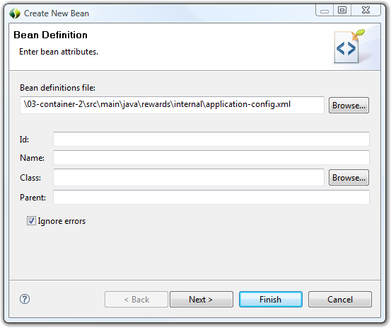
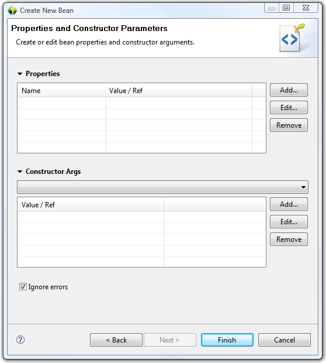
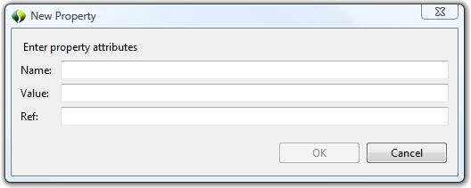
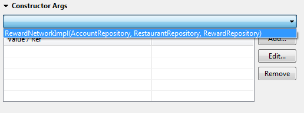
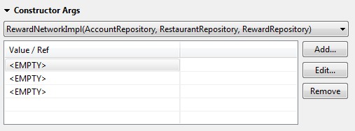
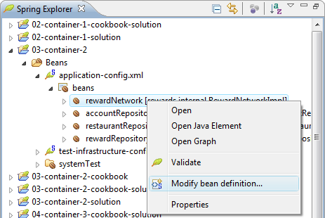

Bean creation is made easier with the New Bean wizard. There are 3 trigger points to open the wizard:


In the bean wizard enter the attributes in the Bean Definition page. Any error that the bean wizard detects will be shown in the title region and the Finish button will be disabled until the errors are fixed. To ignore the errors, deselect the Ignore errors check box in the bottom left of the page.
Click Next to add property or constructor-arg definitions, otherwise click Finish.

To add a new property definition, click Add... in the Properties section which will bring up a New Property dialog. Enter values in the appropriate fields and click OK. The new property will appear in the Properties table. To modify a property, select from the Properties table and click Modify... which will bring up a dialog for modifying the attributes.

By default the Constructor Args section is collapsed. The recommended way to add constructor arg definitions is to select a constructor from the drop down menu. The correct number of constructor args will be inserted into the Constructor Args table with an <EMPTY> value. To change the value of the constructor arg, select from the table and click Edit... (Note that the wizard only supports simple definitions - for example there is no way to define a constructor arg with a nested bean. Simply leave the value/ref field to be empty and modify the bean definition from source directly after the bean is created).

The bean wizard can also be used to modify an existing bean definition. To bring up the wizard, right click on the bean from the Spring Explorer and select Modify bean definition...

The wizard is the same as the one described above for creating a new bean definition.